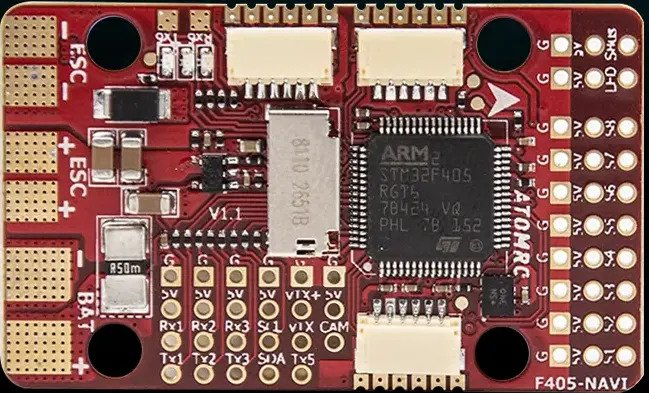
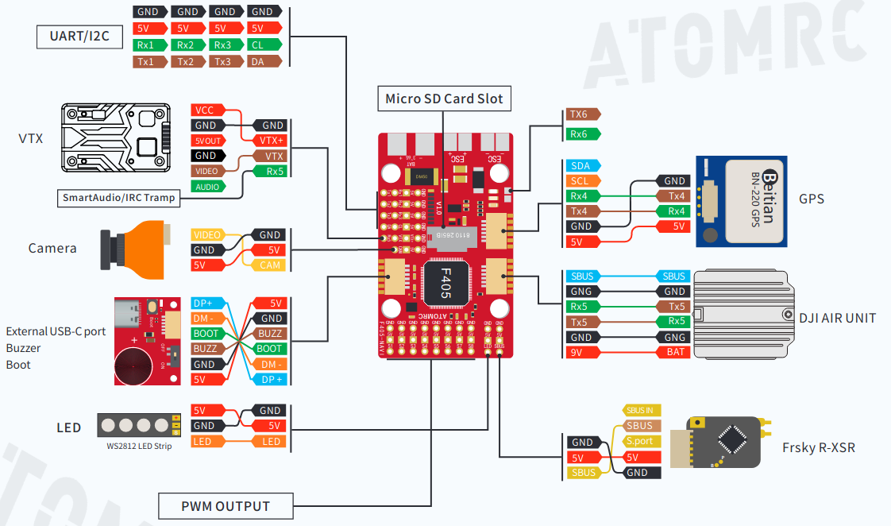

AtomRC F405-NAVI¶
{kind=link}
the above image and some content courtesy of ATOMRC
Note
Due to flash memory limitations, this board does not include all ArduPilot features. See Firmware Limitations for details.
Specifications¶
Processor
STM32F405RGT6 ARM (168MHz)
AT7456E OSD
Sensors
BMI270 IMU (accel, gyro)
SPL-06 barometer
Voltage & 120A current sensor
Power
6V ~ 30V DC input power
5V, 5A BEC for servos
5V or 9V, 2A BEC for video
Interfaces
6x UARTS
8x PWM outputs
1x RC input with inverter for SBUS/PPM
I2C port for external compass and airspeed sensor
Type-C USB port
SD Card Slot
6 pin JST-GH for GPS/Compass
6 pin JST-GH for DJI air units
6 pin JST-GH for remote USB/Buzzer included with autopilot
Size and Dimensions
50mm x 30mm x 12mm
21g
Where to Buy¶
Pinout¶
{kind=link}
Default UART order¶
SERIAL0 = console = USB
SERIAL1 = Telemetry1 = USART1
SERIAL2 = RCinput = USART2 (RX2 connected to SBUS via inverter, to use as UART input use BRD_ALT_CONFIG = 1 and do not attach anything to SBUS pin)
SERIAL3 = GPS1 = USART3
SERIAL4 = GPS2 = UART4
SERIAL5 = USER = UART5 (typically used for DJI Goggles (see MSP OSD) or Tramp VTX control (see Video Transmitter Support))
SERIAL6 = USER = USART6 (solder pads)
Serial protocols shown are defaults, but can be adjusted to personal preferences.
Dshot capability¶
All motor/servo outputs are Dshot and PWM capable. However, mixing Dshot and normal PWM operation for outputs is restricted into groups, ie. enabling Dshot for an output in a group requires that ALL outputs in that group be configured and used as Dshot, rather than PWM outputs. The output groups that must be the same (PWM rate or Dshot, when configured as a normal servo/motor output) are: 1/2, 3/4/8, 5/6/7, 8, and 9 (LED).
Note
PWM9 is marked as “LED”
RC Input¶
The SBUS pin, is passed by an inverter to RX2 (UART2 RX), which by default is mapped to a timer input instead of the UART, and can be used for all ArduPilot supported receiver protocols, except CRSF/ELRS and SRXL2 which require a true UART connection. However, FPort, when connected in this manner, can provide RC without telemetry.
To allow CRSF and embedded telemetry available in Fport, CRSF, and SRXL2 receivers, the RX2 pin can also be configured to be used as true UART2 RX pin for use with bi-directional systems by setting the BRD_ALT_CONFIG to “1” so it becomes the SERIAL7 port’s RX input pin.
With this option, SERIAL2_PROTOCOL must be set to “23”, and:
PPM is not supported.
DSM/SRXL connects to the RX2 pin, but SBUS would still be connected to SBUS.
FPort requires connection to TX2 and RX2 via a bi-directional inverter. See [copywiki destination=”plane,copter,rover,blimp”].
CRSF also requires a TX2 connection, in addition to RX2, and automatically provides telemetry.
SRXL2 requires a connection to TX2 and automatically provides telemetry. Set SERIAL6_OPTIONS to “4”.
Any UART can be used for RC system connections in ArduPilot also, and is compatible with all protocols except PPM (SBUS requires external inversion on other UARTs). See Radio Control Systems for details.
Note
the 5v pin above the SBUS pin and the 5V pin in the GPS connector are powered when USB is connected. All other 5V pins are only powered when battery is present.
Battery Monitor Configuration¶
These settings are set as defaults when the firmware is loaded (except BATT_AMP_PERVLT which needs to be changed from the default value). However, if they are ever lost, you can manually set the parameters:
Enable Battery monitor.
BATT_MONITOR =4
Then reboot.
BATT_VOLT_MULT 11.08836
Connecting a GPS/Compass module¶
This board does not include a GPS or compass so an external GPS/compass should be connected as shown below in order for autonomous modes to function.
Firmware¶
Firmware for this board can be found here in sub-folders labeled “AtomRCF405NAVI”.
[copywiki destination=”plane,copter,rover,blimp”]